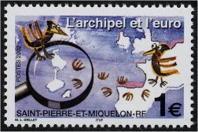

LIST 2002/07

GU125
＜略号＞
BK=切手帳，S/S=小型シート，［S］=シール式，CEPT=ヨーロッパ切手，□=無目打
( )内の数字は、種類の数
全体に取り消し線のあるものは、売り切れです。(2020.11.19)
品番のみに取り消し線があるものは、入荷待ちです。
青文字の品番は、再入荷（在庫僅）です。
最近売り切れの時期が早まっております。
ご注文はおはやめにどうぞ。
| 品番 | 品名 | 単価 |
| ＧＵ ４ | アメリカ ヒーロー (37c＋8c) [S] (1) | 105 |
| ＧＵ ５ | アメリカ アメリカの名作写真 [S] 20連 | 1620 |
| ＧＵ ６ | アメリカ 普通 星 年号右、左 [S] (2) | 60 |
| ＧＵ ７ | アメリカ 普通 旗 無額面 (1) | 85 |
| ＧＵ ８ | アメリカ 普通 旗 無額面 [S] (1) | 85 |
| ＧＵ ９ | アメリカ 普通 旗 無額面 [S] 20枚ペーン | 1670 |
| ＧＵ１０ | アメリカ 普通 旗 無額面 [S] 両面20枚ペーン | 1670 |
| ＧＵ１３ | アメリカ 昔の玩具４種５組 [S] ＢＫ | 1670 |
| ＧＵ１５ | アメリカ 昔の玩具 その [S] ４連 | 340 |
| ＧＵ１６ | アメリカ コイル 昔のポット (1) | 30 |
| ＧＵ１７ | マーシャル 南洋の鳥 16種連刷 | 1340 |
| ＧＵ１８ | オルダニー 渡り鳥 (6)＋S/S | 1485 |
| ＧＵ２０ | アンドラ(仏） 交通安全 (1) | 150 |
| ＧＵ２１ | アンドラ(仏） 世界水の日 (1) | 150 |
| ＧＵ２２ | アンドラ(仏） 伝説 (6) | 1850 |
| ＧＵ２３ | アンドラ(仏） 冬季５輪 (1) | 120 |
| ＧＵ２４ | アンドラ(仏） ロザレダホテル (1) | 100 |
| ＧＵ２５ | オーストラリア 砂漠の動物、花 (4) | 610 |
| ＧＵ２６ | オーストリア 鉄道郵便車と消印タブ (1) | 505 |
| ＧＵ２８ | オーストリア 修道院800年 壁画 (1) | 430 |
| ＧＵ２９ | オーストリア 漫画 少年と犬 (1) | 120 |
| ＧＵ３０ | オーストリア 漫画 アヒルのミミ (1) | 110 |
| ＧＵ３２ | ボスニア 化石 アンモナイト 他２連 | 390 |
| ＧＵ３３ | ボスニア 国連難民機関50年 (1) | 90 |
| ＧＵ３４ | スルプスカ 普通中型 石油プラント (1) | 360 |
| ＧＵ３５ | スルプスカ 教会の塔 (1) | 95 |
| ＧＵ３６ | スルプスカ セルビアの女神 (1) | 190 |
| ＧＵ３７ | カナダ 観光名所各５種 [S]ＢＫ (2) | 1330 |
| ＧＵ３８ | カナダ 伝統工芸 コイル [S] (3) | 370 |
| ＧＵ３９ | カナダ 伝統工芸６枚ペーン [S] (2) | 1600 |
| ＧＵ４０ | カナダ カエデの葉コイル [S] (1) | 70 |
| ＧＵ４１ | カナダ 現代彫刻 ２連 | 140 |
| ＧＵ４２ | カナダ セントメアリー大学 ＢＫ | 540 |
| ＧＵ４３ | カナダ セントメアリー大学 ＢＫ単片 | 70 |
| ＧＵ４４ | 中国 黄河水力発電工事 (4)＋S/S | 310 |
| ＧＵ４６ | 台湾 普通高額 80 精密凹版 (1) | 580 |
| ＧＵ４７ | キプロス CEPT サーカス (2) | 200 |
| ＧＵ５１ | アイスランド 女医シグムンドドッティル | 110 |
| ＧＵ５２ | デンマーク 風景 凹版１色 (4) | 780 |
| ＧＵ５３ | エストニア 冬季５輪 金メダル (1) | 70 |
| ＧＵ５４ | エストニア 小鳥 (1) | 70 |
| ＧＵ５６ | フエロー ノルデン 現代彫刻 (2) | 330 |
| ＧＵ５７ | フランス マリアンヌ普通ユーロ貨 (15) | 1770 |
| ＧＵ５８ | フランス マリアンヌ普通ユーロ貨 S/S (2) | 1860 |
| ＧＵ６１ | フランス グリーティング (5) | 510 |
| ＧＵ６４ | フランス 冬季５輪 (1) | 100 |
| ＧＵ６５ | フランス フランスとモロッコの泉 (2) | 220 |
| ＧＵ６６ | フランス 観光 ロワール教会 (1) | 100 |
| ＧＵ６７ | フランス ニムの古代円形競技場 (1) | 100 |
| ＧＵ６８ | フランス CEPT サーカス (1) | 100 |
| ＧＵ６９ | フランス 文化人アラン・ボスケ (1) | 120 |
| ＧＵ７０ | フランス 自転車耐久レース (1) | 100 |
| ＧＵ７１ | フランス 植物学者(FW23別図案） (2) | 220 |
| ＧＵ７２ | フランス 蘭の花 プリキャンセル (2) | 130 |
| ＧＵ７３ | フランス 切手祭 漫画 (1)＋別図 S/S | 210 |
| ＧＵ７５ | フランス 20世紀[5］ 交通(5)×2 大判 S/S | 970 |
| ＧＵ７６ | フランス バレンタイン ハート型(1)＋S/S | 580 |
| ＧＵ７７ | ポリネシア 年賀馬 中国画 浮出 (1) | 230 |
| ＧＵ７８ | ポリネシア 国際競技大会 (2) | 530 |
| ＧＵ７９ | ポリネシア 2001年Ｘマス 人形 (1) | 210 |
| ＧＵ８０ | ポリネシア 海の生物 ウニ他 浮出 (4) | 520 |
| ＧＵ８１ | ポリネシア グリーティング 花 (4) | 490 |
| ＧＵ８２ | ジブラルター CEPT サーカス (4) | 530 |
| ＧＵ８３ | イギリス 愛、転居など縦５連＋タブ5 | 470 |
| ＧＵ８５ | グァンジー 英女王在位50年 (6) | 740 |
| ＧＵ８６ | グァンジー 郵便ポスト150年 S/S | 560 |
| ＧＵ８７ | 香港 北京九龍直通鉄道 (4) | 350 |
| ＧＵ８８ | 香港 北京九龍直通鉄道 連刷版シート | 1350 |
| ＧＵ９２ | 香港 サンゴ(GT30同図) (4)＋S/S | 690 |
| ＧＵ９４ | イタリア 聖母他名画 大型凹版 (2) | 200 |
| ＧＵ９５ | ラトビア 冬５輪、パラリンピック (2) | 200 |
| ＧＵ９７ | リトアニア テン、ヤマネコ (2) | 235 |
| ＧＵ９９ | ルクセンブルグ 現代絵画 (3) | 255 |
| ＧＵ１００ | マーヨット フランス普通に加刷 (16) | 1860 |
| ＧＵ１０１ | マーヨット マングローブ樹海空撮 (1) | 320 |
| ＧＵ１０２ | マーヨット 紋章 0.46 e (1) | 100 |
| ＧＵ１０３ | マーヨット スポーツ振興 (1) | 90 |
| ＧＵ１０４ | ニューカレドニア 子供と本 (1) | 120 |
| ＧＵ１０５ | ニューカレドニア 名所風景 たて２連 | 350 |
| ＧＵ１０６ | ニューカレドニア カイトサーフ (1) | 180 |
| ＧＵ１０７ | ニューカレドニア 文化人ルリーシュ (1) | 270 |
| ＧＵ１０８ | ニューカレドニア 祭事 Ｘマス、新年 (3) | 530 |
| ＧＵ１０９ | ニューカレドニア バレンタイン ハート型 (1) | 180 |
| ＧＵ１１１ | ニューカレドニア 年賀 馬 (1)＋２種面 S/S | 420 |
| ＧＵ１１２ | ニューカレドニア 自転車競技優勝 (1) | 470 |
| ＧＵ１１３ | ニューカレドニア クリケット競技 (1) | 180 |
| ＧＵ１１４ | ニューカレドニア 古代の斧 浮出印刷 (1) | 890 |
| ＧＵ１１５ | ニューカレドニア ヨット世界選手権 (1) | 120 |
| ＧＵ１２１ | サンピエールミクロン リンゴ園 (1) | 120 |
| ＧＵ１２２ | サンピエールミクロン フランス普通に加刷 (15) | 1770 |
| ＧＵ１２３ | サンピエールミクロン ララナガの農家 凹版 (1) | 170 |
| ＧＵ１２５ | サンピエールミクロン 島とユーロ (1) | 210 |
| ＧＵ１２６ | サンピエールミクロン レハルー艦長と軍艦 (1) | 100 |
| ＧＵ１２７ | サンピエールミクロン 漁網と漁師 凹版 (2) | 130 |
| ＧＵ１２８ | サンピエールミクロン 2001年Ｘマス サンタ (1) | 100 |
| ＧＵ１３１ | バチカン 大聖堂の名画 (10) | 1340 |
| ＧＵ１３２ | ワリスフツナ 消防士章 ○型 [S] (1) | 150 |
| ＧＵ１３３ | ワリスフツナ 行政監察制度１年 (1) | 1410 |
| ＧＵ１３４ | ワリスフツナ 郵趣サロン 鳥 (3) | 790 |
| ＧＵ１３５ | ワリスフツナ 婦人年 昔の女王写真 (1) | 1410 |
| ＧＵ１３６ | ワリスフツナ フランス学院１周年 (1) | 200 |
| ＧＵ１３７ | ワリスフツナ 王の埋葬１年 墓 (1) | 600 |